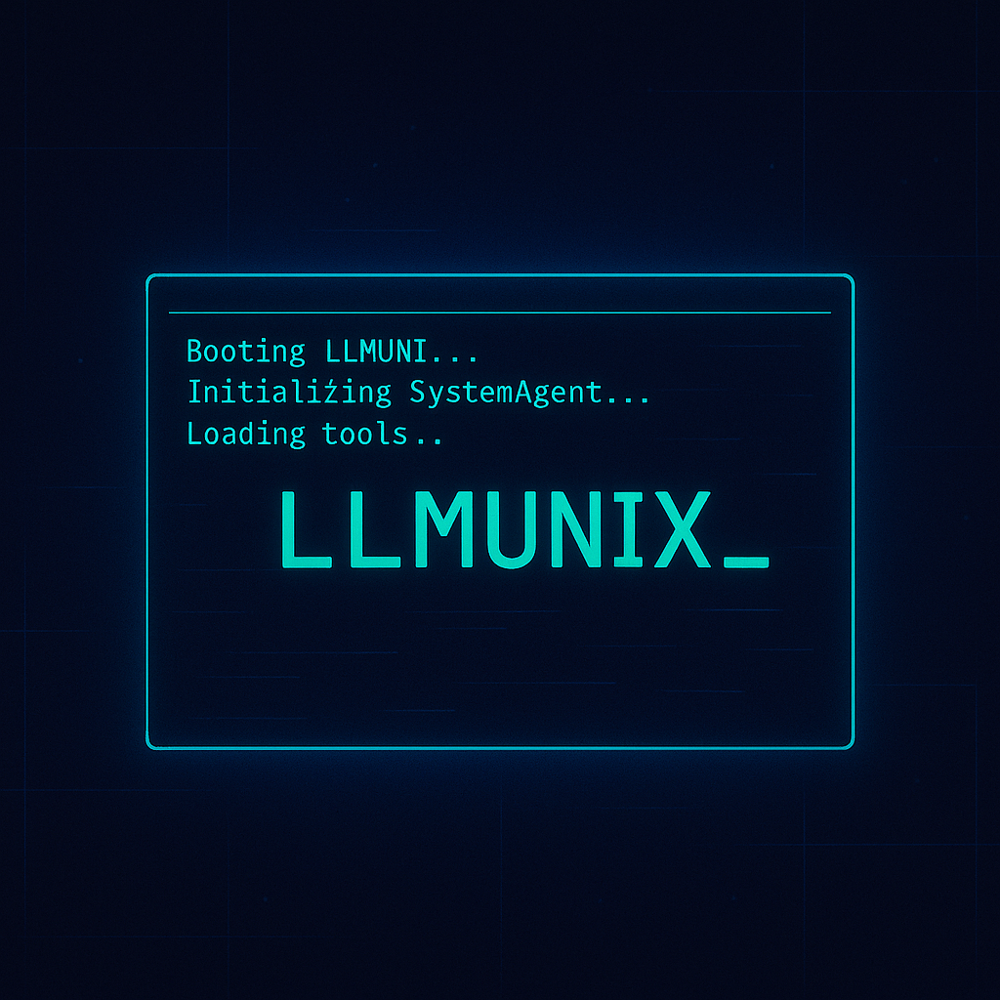

Building the Future of Intelligent Agents
Exploring adaptive AI systems through experimental frameworks and autonomous agent architectures
All projects are experimental research and will remain in permanent alpha status
Experiments

LLMunix 🦄 ALPHA
Pure Markdown Operating System
A revolutionary Pure Markdown Operating System designed to be run by multiple AI runtime engines. Compatible with Claude Code and Claude Code sub agents, Gemini CLI, and Qwen Code. Features multi-tier memory, inter-agent messaging, and dynamic evolution capabilities. Runtime engines interpret the manifest file to turn markdown specifications into a functional operating system.
LLMunix Starter 🏭 ALPHA
Pure Markdown OS Template for Claude Code Web
A fresh LLMunix template optimized for Claude Code on the web. The factory for building specialized agents dynamically—no pre-built solutions, just the essential kernel (3 system agents) to create exactly what you need, when you need it. Every project learns and improves future executions.
LLMunix Marketplace 🔌 ALPHA
Claude Code CLI Plugin
The LLMunix kernel as a Claude Code CLI plugin. Install the Pure Markdown Operating System via the marketplace and solve complex goals with the /llmunix command—dynamically creating and orchestrating specialized agent teams on the fly. Self-evolving problem-solving at your fingertips.
About Evolving Agents Labs
We're advancing the frontier of autonomous AI through experimental frameworks and research prototypes. Our work explores early-stage concepts in adaptive agent systems - all projects remain permanently in alpha status as ongoing research experiments.
📢 Our Research Evolution
Phase 1: Evolving Agents Toolkit (EAT) - Sunset
Our first project, the Evolving Agents Toolkit (EAT), was officially discontinued in July 2025. While EAT demonstrated powerful concepts in multi-agent orchestration with MongoDB backend, we recognized that the complex Python architecture was over-engineered for achieving adaptive agent behavior.
Phase 2: LLMunix - Simplified Evolution
EAT's concepts were dramatically simplified and reimplemented in LLMunix - a Pure Markdown Operating System that achieves the same adaptive agent goals through elegant simplicity. From EAT's multi-component Python architecture with MongoDB backend to LLMunix's pure markdown definitions interpreted by LLM runtime engines - same adaptive capabilities, 10x simpler implementation.
Phase 3: Agent Forge JIT POCs - Current Focus
With Claude Code's implementation of sub-agents in markdown as an official feature, we realized our original markdown-based agent concept was validated. We now focus on Agent Forge and JIT POCs - exploring just-in-time compilation, hybrid architectures, and benchmarkable performance improvements over pure LLM approaches.
Adaptive Behavior Research
Experimental systems that explore how agents might modify their decision-making processes based on context and interaction patterns.
Pure Markdown Architecture
Exploring the use of markdown as a full operating system specification, enabling clean separation of behavior, state, and execution logic.